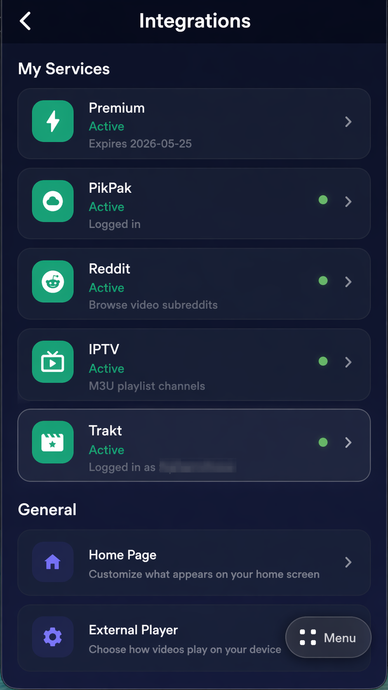
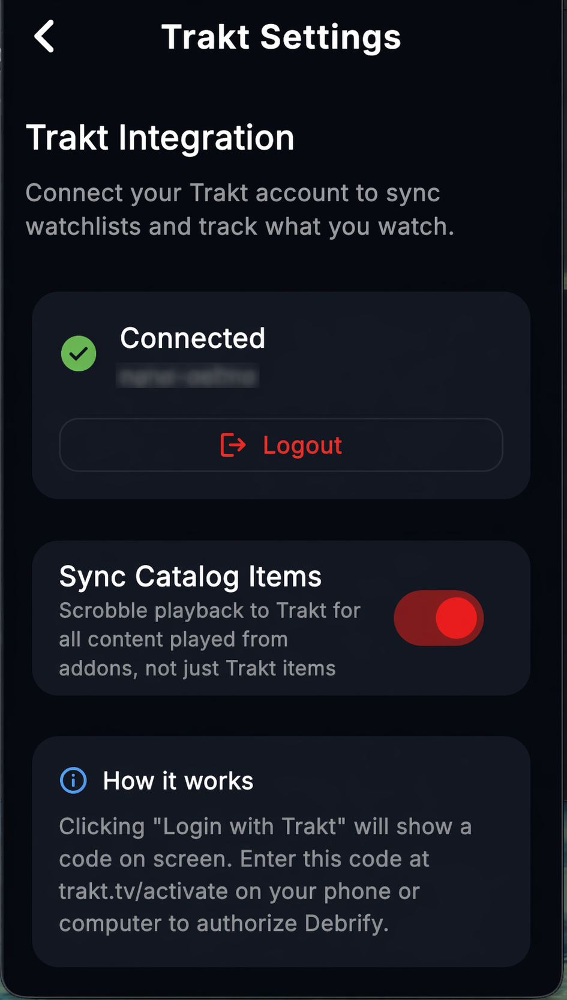

Set Up Trakt
Connect Trakt once in Settings, then Debrify can use your playback history, lists, and calendar data across the app.
1
Open Trakt from Settings
Go to Settings and open the Trakt integration. This is where you connect or manage your Trakt account.
Settings
Trakt
Integration status

Open the Trakt integration from the settings integrations list
2
Finish login and review Trakt settings
If you are not connected yet, tap Login with Trakt. Debrify will show a code on screen. Enter that code at trakt.tv/activate on your phone or computer, then return to Debrify.
Once connected, this page shows the connected state and lets you control Sync Catalog Items. Turn that on if you want Debrify to scrobble playback for addon and catalog content too, not just items opened from the Trakt section.
Connected
Login with Trakt
Sync Catalog Items

Trakt settings after the account is connected